|
|
HELP FIND THE FOLLOWING LOCATIONS
PAGE 18

Unknown 1 – The barber, Tony Mazzo (Will Stampe) runs over the The Angel Club to see Frank Romano. Later Weasel (Louis Mansi) waits on the street corner for Browning and Keen.


Unknown 2 – Tony Mazzo is called in by Superintendent Browning and Gideon to discuss the protection rackets.

(Identified by Stephen Carter, July 2007)

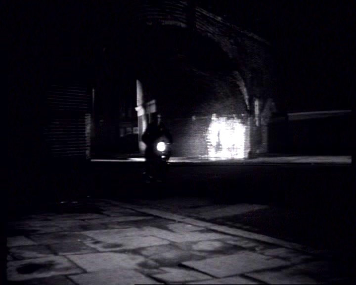


Unknown 4 – Lollo Romano (Jane Merrow) is observed by two policemen arriving early in the morning at the home she shares with Frank. Later Henry Waldo (Frederick Bartman) arrives at the flat to discuss their engagement.

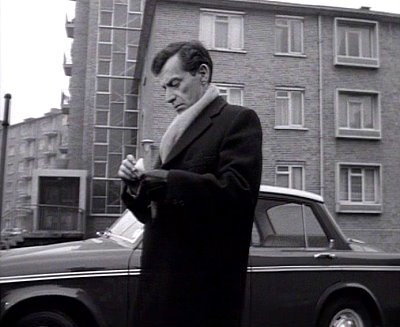
(Identified by Stephen Carter, July 2007)
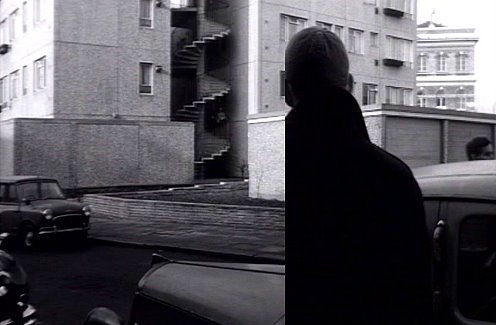
Unknown 5 – One of the policemen watching the Romano’s flat leaves a shop and notices Waldo leaving the building with Lollo.

(Identified by Stephen Carter, July 2007)


Grosvenor Hotel, Borehamwood– Henry Waldo (Frederick Bartman) and Lollo Romano (Jane
Merrow)
leave the restaurant in


Unknown 7 – Blake goes for a meeting with Romano at Weller’s Warehouse.

Kings Cross Station, N1– The bullion delivery arrives at kings Cross Station and is picked up by the security van.

Unknown 8 - Weasel (Louis Mansi) is picked up in a police car by Browning and Keen.


Unknown 9- Weasel tells his tale to Browning and Keen after they pick him up in their police car.

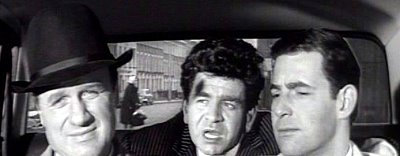
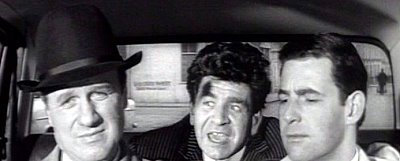
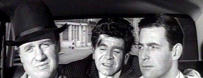
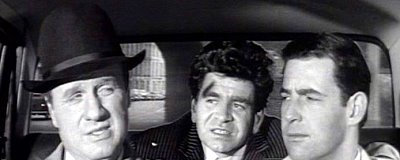
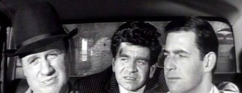
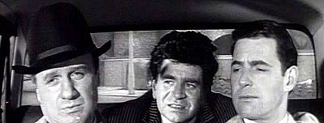
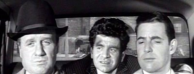
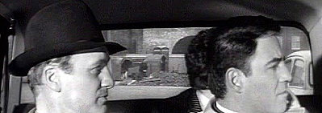
(Identified by Stephen Carter, July 2007)


 Also seen in LS86
location 4
Also seen in LS86
location 4
Unknown 11 – Ronald Lacey (Jerry Blake), Frank Romano (Ray Brooks) and Lollo Romano (Jane Merrow) leave Weller’s Warehouse via a coal hole and leave in a waiting Morris car.

Think you know a spot? Need a bigger image? Email me.
< Previous | Index | Avengerland | Next >
Copyright © 2003 Anthony R. McKay